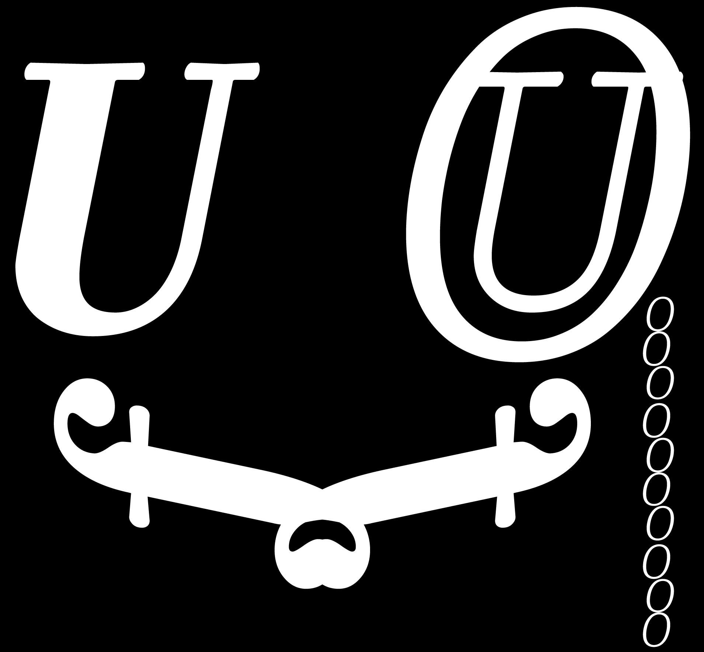

PARMIGIANO COLLECTION
Parmigiano
Piccolo
Pro

Опубликовано
2014–2015
Parmigiano
Типографическая система Parmigiano (названа в честь Пармы — города, где жил и работал Бодони) претендует на роль самой большой в истории коллекции шрифтов, вдохновлённых творчеством Джамбаттисты Бодони. Семейство Parmigiano Text отличается изысканностью в противовес варианту Piccolo и в то же время плотнее по рисунку, чем начертание Headline.
Стили
Parmigiano Piccolo Pro Thin
Parmigiano Piccolo Pro Thin Italic
Parmigiano Piccolo Pro Light
Parmigiano Piccolo Pro Light Italic
Parmigiano Piccolo Pro Regular
Parmigiano Piccolo Pro Regular Italic
Parmigiano Piccolo Pro Medium
Parmigiano Piccolo Pro Medium Italic
Parmigiano Piccolo Pro Bold
Parmigiano Piccolo Pro Bold Italic
Parmigiano Piccolo Pro Black
Parmigiano Piccolo Pro Black Italic
The quick brown fox jumps over the lazy dog
The quick brown fox jumps over the lazy dog
The quick brown fox jumps over the lazy dog
The quick brown fox jumps over the lazy dog
The quick brown fox jumps over the lazy dog
The quick brown fox jumps over the lazy dog
The quick brown fox jumps over the lazy dog
The quick brown fox jumps over the lazy dog
The quick brown fox jumps over the lazy dog
The quick brown fox jumps over the lazy dog
The quick brown fox jumps over the lazy dog
The quick brown fox jumps over the lazy dog
48 стилей
24 веса
разработано
кириллица
riccardo olocco jonathan pierini
irina smirnova
ilya ruderman
Поддерживаемые языки
Azəri (Latın), Azərbaycan (Kir),
Alban, English, Afrikaans,
Башкирский, Белорусский,
Български, Magyar, Galego,
Nederlands, Dansk, ГӀа́лгӀай,
Gaeilg, íslenska, Español, Italiano,
Қазақша, Català, Кыргызча, Kurdî
(lat), Latvietis, Lietuvių,
Moldoveni, Монгол (Кир), Монгол
(лат), Deutsch, Norsk, Polskie,
Português, Română, Русский,
Српски, Slovenský, Slovenščina,
Тоҷикӣ, Татар, Türk, Türkmenler,
Удмурт , O'zbek (lat.),
Український, Suomalainen,
Français, Hrvatski, Нохчийн,
čeština, Чӑваш, Svenska,
Esperanto, Eestlane